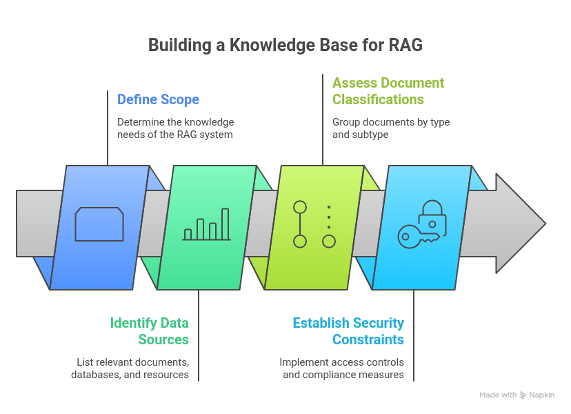
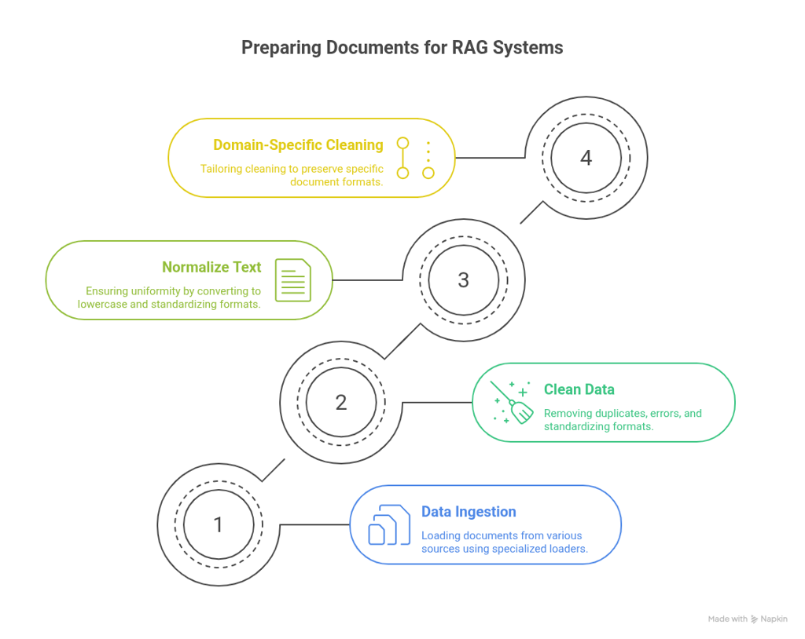
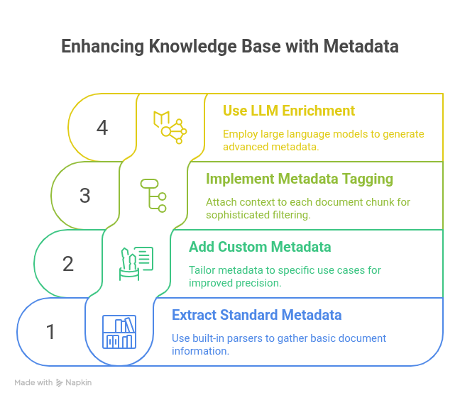

Introduction
Building an effective knowledge base is the foundation of any successful Retrieval-Augmented Generation system. While many articles explain what RAG is, this guide focuses on the practical steps of how to construct a robust knowledge base that powers accurate, contextually relevant AI responses. Let's dive into the implementation process.
Step 1: Define Your Scope and Identify Data Sources
Define what your RAG system needs to know by identifying relevant sources: PDFs, Word documents, Markdown files, wikis, databases, and API endpoints. Group documents by type and subtype to ensure balanced representation.
Establish security constraints early with role-based access controls and separate knowledge bases for different clearance levels.

Fig: Building RAG knowledge base architecture
Step 2: Collect and Preprocess Your Documents
Use specialized loaders (LangChain's PyPDFLoader, UnstructuredMarkdownLoader) to ingest documents. Clean data by removing duplicates, correcting errors, and standardizing formats. Apply regex to eliminate HTML tags, headers, and extra whitespace.
Normalize text: lowercase conversion, consistent date formats, and standardized numerical values. Implement multi-stage refinement for enterprise data, and apply domain-specific cleaning (formatting preservation for legal docs, code block handling for technical docs).

Fig: Document preprocessing and preparation workflow
Step 3: Extract and Enrich Metadata
Extract standard metadata (titles, authors, dates, document types) using LangChain or LlamaIndex. Add custom metadata tailored to your domain—departments for HR systems, versions for technical docs.
Tag metadata before chunking. Use LLM-powered enrichment to extract entities, generate summaries, identify themes, and create question-answer pairs for enhanced retrieval.

Fig: Enhancing knowledge base with metadata enrichment
Step 4: Implement Strategic Document Chunking
Chunking decides how your documents get split into "bite-sized" pieces for retrieval. Do it right, and your AI can answer correctly. Do it wrong, and you get context-less gobbledygook.
Popular Chunking Strategies
- Fixed-size chunks: Split documents into uniform segments (e.g., 512 tokens)
- Recursive chunking: Hierarchical splitting (sections → paragraphs → sentences)
- Semantic chunking: Split based on meaning, not size
- Agentic chunking: AI decides on the best split points
Rule of thumb: Start with 512 tokens and 50–100 token overlap. Test, test, test.
Step 5: Generate and Store Embeddings
Embeddings are numerical representations of text that capture meaning, enabling similarity-based retrieval.
Tips for Embeddings
- Model selection: Use general models like text-embedding-3-small or domain-specific models (BioGPT for biomedical). Fine-tune if necessary.
- Vocabulary considerations: Ensure the model can handle domain-specific terminology.
- Consistency: Use the same model for document chunks and user queries.
- Evaluation: Visualize embeddings using t-SNE and calculate distances to test model performance.
Balance performance against cost, large models give better results but consume more storage and computation. Always validate on real data.
Step 6: Choose and Configure Your Vector Database
Your vector DB stores embeddings and handles similarity search. Options include:
- Pinecone: Enterprise-ready, fully managed
- Weaviate: Flexible, hybrid search, knowledge graph support
- ChromaDB: Lightweight, great for prototypes
- Qdrant / Milvus: Open-source alternatives
Setup tip: Store embeddings with metadata, use similarity indexes like HNSW, and plan namespaces if you have multiple teams.
Step 7: Build the Retrieval Pipeline
Once your knowledge base is ready, it's time to fetch the right chunks for queries.
Retrieval Strategies
- Semantic search: Embed the user query and retrieve top-k chunks based on similarity.
- Hybrid search: Combine vector similarity with keyword search (e.g., BM25) for better coverage.
- Reranking: Score and reorder retrieved chunks to improve precision.
- Metadata filtering: Scope search by date, document type, department, or security level.
- Context configuration: Control maximum context length, number of chunks, and fill ratio (~0.6–0.7 for balance).
Step 8: Integrate with Your LLM
Combine system instructions, user query, and retrieved chunks with source citations into augmented prompts. Pass context to your LLM (GPT-4, Claude, Llama) with instructions to cite sources and acknowledge missing information.
Edge cases: Return "no information available" for irrelevant queries, synthesize across chunks for multi-source answers, and ask clarifying questions for ambiguity.
Step 9: Test and Evaluate Your Knowledge Base
Key metrics: Retrieval (relevance, precision, recall) and Generation (correctness, faithfulness, helpfulness). Use BLEU, ROUGE, BERTScore, or custom metrics.
Leverage LLM-as-judge frameworks (RAGAS, TruLens) and monitor continuously with A/B testing and user feedback.
Step 10: Optimize and Maintain
- Version Control: Store embedding model versions as metadata. Use shadow re-indexing for safe model transitions with A/B testing.
- Regular Updates: Schedule document refreshes and implement incremental updates over full re-indexing.
- Scale Strategically: Start with ChromaDB for prototypes, then migrate to Weaviate or Pinecone for production. Keep schemas and chunking logic clean for easy migration.
- Cost & Performance: Cache results, use lightweight retrieval models, batch requests, apply quantization, and monitor query costs.
- Security: Network isolation, encryption (rest/transit), RBAC, audit logging, and regular assessments.
Advanced Techniques to Consider
Once your baseline knowledge base is operational, explore these advanced approaches:
- GraphRAG: Combines vector databases with knowledge graphs to capture both semantic meaning and structured relationships between entities. This enables more sophisticated reasoning, context-aware source prioritization, and unified processing of structured and unstructured data.
- Agentic RAG: Employs specialized AI agents for different domains (compliance, technical documentation, customer support) that directly access and share relevant information with LLMs based on query context. This modular approach provides deeper domain expertise than generalist knowledge bases.
- Contextual Retrieval: Adds explanatory context to chunks before embedding them, improving semantic coherence. Use LLMs to generate brief descriptions of each chunk's role within the larger document structure.
- Late Chunking: Embeds entire documents first, then derives chunk embeddings from full document context. This provides chunks with awareness of the complete document while maintaining retrieval granularity.
Conclusion
Building an effective RAG knowledge base requires attention to data quality, strategic chunking, appropriate embeddings, and robust retrieval. Start with a well-defined scope, clean preprocessing, and rigorous evaluation.
Your RAG system's quality reflects your knowledge base quality. Invest in proper document preparation, metadata enrichment, and systematic testing. Optimize iteratively based on real data to build accurate, contextually relevant AI responses.
Written By
Ujwal Budha
Published: 1st December 2025
Ujwal Budha is a passionate Cloud & DevOps Engineer with hands-on experience in AWS, Terraform, Ansible, Docker, and CI/CD pipelines. Currently working as a Jr. Cloud Engineer at Adex International Pvt. Ltd., he specializes in building scalable cloud infrastructure and automating deployment workflows. An AWS Certified Solution Architect Associate, Ujwal enjoys sharing his knowledge through technical blogs and helping others navigate their cloud journey.